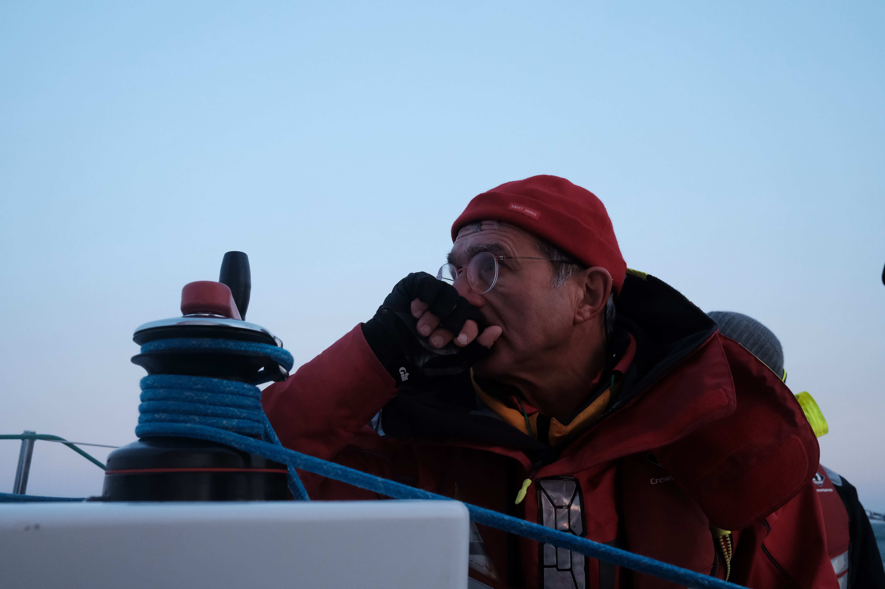

I am a second year student in IESEG school of management. Beside my studies at IESEG I have multiple passions like sailing, theater and cinema, and photography.
Discover the school in which I studyAfter my french baccalaureat, I decided to continue my studies in IESEG, the first "postbac" Business School. The school has given me the opportunity to strenghten my collaboration skills with other individuals that can work in very different ways than me. During the first semester of my third year, I will have the opportunity to study during 4 to 5 months in Mexico to discover the culture and language and to keep learning new skills and knowledge.
Ever since I was born, I have loved doing activities that required me to stimulate my physical and intellectual capacities.
My parents and grandparents made me discover sail boats at a very young age. I immedialtely fell in love with it, since it was a very physical activity, and it also required to understand more technical parts like the winds, the forces that are applied on the boat, ect... I took a lot of lessons during the summers when I was bewteen 7 and 14 years old. When I was 15 I decided to work during the summers in a sailing club. My job was to help and assist sailing instructors in their everyday tasks. When I was 17, I graduated from the formation required to be a sailing instructor, and since then, I work every summer as a sailing instructor.
Sailing has not been the only sport that I experienced. I have also done multiple other sports like : Kitesurf, Swimming, Gymnastics, and Soccer.
Stories and imagination have been very important for me in my life, and I think they are the reasons why I love so much Theater and Cinema.
Rapidly I started to enroll in the school plays, and really enjoyed this experiences. My parents signed me up in theater lessons beside school, and I loved it. In my last year of high school, I even hesitated in pursuing IESEG and rather study in a theater school to becom an actor.
I also love cinema and some of my favorite movies are : Avatar by James Cameron, Interstellar by Chritsopher Nolan, Boîte Noir by Yann Gozlan, and La La Land by Damien Chazelle.
I have recently began to be very interested in photography. I find it very pleasing to adjust the different settings of the camera in order to get the "perfect" shot. My camera is quite small and easily fits in a pocket. Therefore, I bring it everywhere I go.
